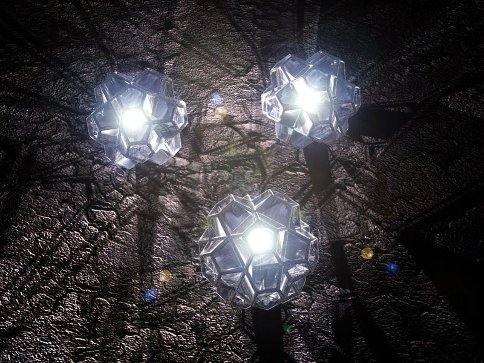

after the lamps where destoyed the valar retreted to the west and made the land of valinor
in valinor the valar made two trees to give light to valinor but they left middle earth in darkness
after more working on the world and makeing there dwelling and they left the gardens of middle earth in darkness and many wonderfull things slumberd
in middle earth the first children of illuvitar woke
the only valar that went to middle earth was orme and on one trip he found the elves and offerd to bring them bakc to valinor
at first the elves where afraid of him becaus ethey thought he was melkor who had been abducting some of them
they whent to valinor and so the valar attacked melkor and took him prisinor
as the ages passed melkro was freed and rpetended to reconsile
melkor with a giant monster kills the two trees and steals the beutifull jewls that are embued with the light of the trees
elves are angry and some fight for boats this is the first kinslaying after they go to middle earth and this is the secand sunderign fo th elves
